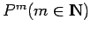

Inhalt Index DeskTop Bronstein

 Dynamische Systeme und Chaos Bifurkationstheorie, Wege zum Chaos Übergänge zum Chaos Globale homokline Bifurkationen
Dynamische Systeme und Chaos Bifurkationstheorie, Wege zum Chaos Übergänge zum Chaos Globale homokline Bifurkationen


Die invarianten Mannigfaltigkeiten der POINCARÉ-Abbildung einer Differentialgleichung (17.17) im  nahe dem periodischen Orbit
nahe dem periodischen Orbit  seien wie in der folgenden Abbildung aus Abschnitt
seien wie in der folgenden Abbildung aus Abschnitt
Transversale homokline Punkte.
Die transversalen homoklinen Punkte Pj(x0) korrespondieren mit einem bezüglich  homoklinen Orbit von (17.17). Die Existenz eines solchen homoklinen Orbits in (17.17) führt zu einer sensitiven Abhängigkeit von den Anfangswerten. In Verbindung mit der betrachteten POINCARÉ-Abbildung lassen sich die auf SMALE zurückgehenden Hufeisen-Abbildungen konstruieren, die zu folgenden Aussagen führen:
homoklinen Orbit von (17.17). Die Existenz eines solchen homoklinen Orbits in (17.17) führt zu einer sensitiven Abhängigkeit von den Anfangswerten. In Verbindung mit der betrachteten POINCARÉ-Abbildung lassen sich die auf SMALE zurückgehenden Hufeisen-Abbildungen konstruieren, die zu folgenden Aussagen führen:
Satz von Smale: In jeder Umgebung eines transversalen homoklinen Punktes der POINCARÉ-Abbildung (17.30) existiert ein periodischer Punkt dieser Abbildung. Darüber hinaus existiert in jeder Umgebung eines transversalen homoklinen Punktes eine für  invariante Menge  , die vom CANTOR-Typ ist. Die Einschränkung von Pm auf
, die vom CANTOR-Typ ist. Die Einschränkung von Pm auf  ist topologisch konjugiert zu einem BERNOULLI-Shift, d.h. zu einem mischenden System.
ist topologisch konjugiert zu einem BERNOULLI-Shift, d.h. zu einem mischenden System.
Die invariante Menge der Differentialgleichung (17.17) nahe des homoklinen Orbits sieht aus wie das Produkt einer CANTOR-Menge mit dem Einheitskreis. Ist diese invariante Menge anziehend, dann stellt sie für (17.17) einen seltsamen Attraktor dar.